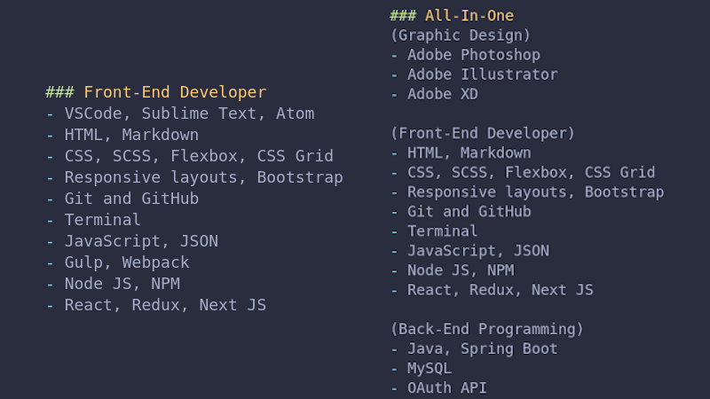

Front-End is not a Catch-All
2020-12-23
Problem
When searching online for Front-End Developer jobs its frustrating seeing roles titled, "Front-End" with a low salary range that includes all or parts of Project Management, Graphic Design, User Experience, and/or Back-End Programming.
Each one of those titles is a different career path with a massive set of skills that takes years to learn and master. No one is capable of learning whole career paths over a weekend.
This is not fast-food where you can cross-train someone in a few days to work at the Window.
That's why many people go to college or a technical school to learn one of these career paths.
Companies who post these "Catch-All" roles, actually need a whole department.
But they are either ignorant about the amount of time it takes to learn these career paths, too broke to afford the people they need, or too greedy thinking they can get some junior developer who's talented with computers but won't notice they are being expected to do three jobs for the salary of the lowest paying title.
I often wonder about the people creating these positions and whom they think they're fooling?
Developers have access to the Internet. It doesn't take much to see through this game.
We compare different job listings against each other.
For the record it is unrealistic to expect one person to know or be able to do two or more jobs, for the cheapest title salary.
It's also insulting that they think we don't know the difference. Especially, when we are specifically looking for a role and end up wasting time looking at these "All-In-One" positions with misleading titles.
Know the difference
Here's an example of a Front-End Developer role compared with an "All-In-One" position.

Both jobs are titled "Front-End Developer" and both offer the same salary range.
Which would you apply for?
Solution
Getting your poorly titled job listing in front of a large group of people, who don't want it, will not improve your chances of finding the right candidate. In this situation its better to aim for quality over quantity.
People base their definition of career titles and relevant skill sets on what they learned in college, technical school, bootcamp, online video courses, or through books.
Instead of attempting to redefine an industry standard title like "Front-End Developer". Use a generic or all inclusive job title that allows for skills sets from different career paths.
Try "Web Developer" or "Full-Stack Developer" as your Catch-All.
As long as you provide a realistic salary range for the required skill set in relation to your area.
You'll be more likely to find the right person for the job.
Of course your analytics will show less people searching for or engagement with these listings. Because few people have all of these skills or want to take on the amount of work involved in those roles.
You're better off breaking these "All-In-One" jobs into separate positions.
Because people search for specific job titles like:
- Project Manager
- Graphic Designer
- User Experience Designer
- Front-End Developer
- Back-End Programer
If the role you're trying to fill fits their expectations you'll naturally get more engagement.
At the very least please stop using "Front-End Developer" as a Catch-All.